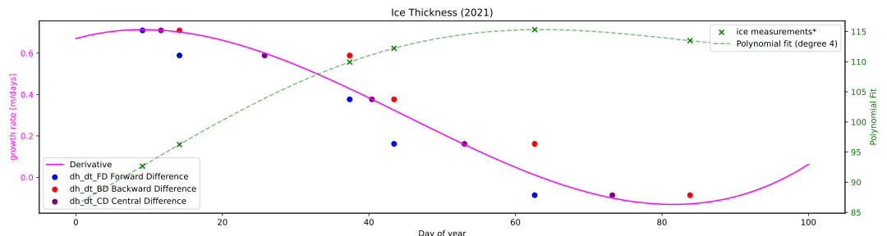

CEGM1000 MUDE: Week 1.5, Friday, Oct 4, 2024.
Most groups did well, although there are a few minor points listed below. Most notably, many groups did not implement the CD method correctly. Compare your analysis to the solution carefully; you may have also already realized this as part of PA 1.6, which used an assert statement to check that the values of the CD were calculated correctly. Finally, an explanation is provided at the end of this document.
Q1: It does not make sense to compute for the entire year because there is no ice in summer! Therefore, the gradient cannot be calculated over multiple years. Seasonality also would mean the physical process changes, but the point is the absence of ice. Always make sure you think about the meaning of your calculations, rather than proceeding with a numerical scheme blindly.
Q2: Equidistance is often misunderstood for CD approach. Many groups have the wrong number of intervals and/or data points.
Q3: Some groups placed the evaluation point “in the middle”, however the points are not equidistant between the neighboring points (most likely cause was that you found the average of three points, not two).
Some groups place it at the days where the measurements are (not equidistant, here the resulting calculation is much further away from the value we intended).
Do not forget that CD is second order! This is illustrated below in the example.
Q4: Make sure you know your trigonometry! Q5: Mostly very good! Q6: Some forgot to evaluate at $x_0+5$
Q7: Make sure you know your trigonometry! Do not forget to evaluate your derivatives at $x_0= \pi$ and $y_0= \pi$
Q8: Some groups made mistakes in the code, some in the calculation, many various mistakes. Feel free to ask if your graph does not match the solution. See also the explanation below, and PA 1.6.
In this assignment we were faced with a situation where we wanted to calculate the numerical derivatives for a series of points. These "data" were irregularly spaced, making the application of our typical differentiation schemes a little different than normal, in particular, the central difference method. Note that all three approaches (forward, backward and central) differences assume that every increment of the discretized domain (in this case, time) is equal. In other words, $\Delta t$ is always the same. This is apparent if you follow the derivations in the book (an exercise left for you to practice on your own!).
Actually, since since forward and backward differences use only one time step, there is not problem with the non-uniform increments, as long as you use the $\Delta t$ associated with each data point. However, since CD uses two increments, this approach returns incorrect results.
There are two approaches possible:
We opted for the second approach, as it is very easy to implement. Note also that the computed value of CD with this approach will be exactly the same as the FD and BD for the left and right points, respectively. Yet it is still 2nd order accurate. Magic?! No! See illustration below to see why.
Although the approach of using three points is ok, there are a few problems here:
Why are the values of FS, BD, CD exactly the same, but CD is still 2nd order accurate? We illustrate this here with a plot that fits a polynomial function to the ice data, then also presents the numerical derivatives calculated for that function (with smaller time steps). Take a look and note the following:

End of file.
© Copyright 2024 MUDE, TU Delft. This work is licensed under a CC BY 4.0 License.